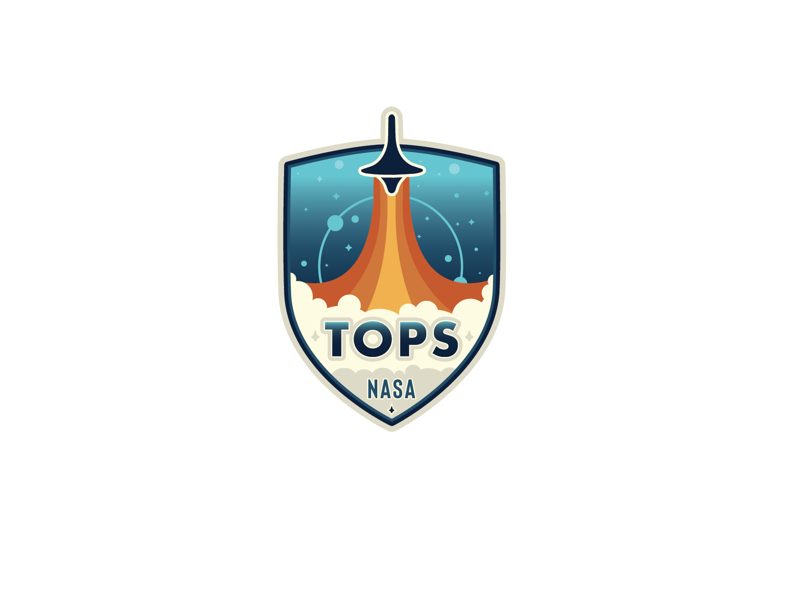

Transform to Open Science#
Welcome to the open science guide for Transform to Open Science (TOPS), a NASA Open-Source Science Initiative mission. Learn more at nasa.github.io/Transform-to-Open-Science.
What is Open Science?#
The United States government defines open science as “the principle and practice of making research products and processes available to all, while respecting diverse cultures, maintaining security and privacy, and fostering collaborations, reproducibility, and equity.”
We believe that open science—-opening up the scientific process from idea inception to result—-increases access to knowledge and expands opportunities for participation. Sharing the data, code, results, and knowledge associated with the scientific process enables more inclusive, diverse and equitable participation in science, while also leading to more transparent, replicable, and reproducible results. But achieving this openness requires changing how we work, to help us move forward together.
NASA’s Transform to Open Science mission#
To help catalyze the move to open science and support changing cultural norms, NASA is championing the Transform to Open Science (TOPS) mission and has declared 2023 a Year of Open Science.
TOPS is a $40 million, 5-year NASA Science Mission Directorate mission geared towards accelerating the adoption and understanding of open science. TOPS will focus on four areas of action—engagement, capacity sharing, incentives, and moving towards opennessto—to make progress against three goals:
To accelerate major scientific discoveries
To increase understanding and adoption of open science
To broaden participation by historically underrepresented communities
These areas are designed to increase awareness about open science, provide learning resources for those looking to deepen their understanding and usage of open science practices and principles, and to promote events that support transitioning to open science. By partnering and collaborating with other organizations, NASA will support and enable the scientific community to move towards open science.
{kind=link}
The Open Science Journey#
Research labs, scientific funding organizations, and individual researchers have known and discussed for many years how interdisciplinary and diverse teams are capable of advancing scientific progress. These groups and individuals began to advocate for inclusive labs and organizations; places where data and scientific practice was equitable and accessible to people from different backgrounds, with differing levels of academic training, and with different lived experiences. Although they may not have called this movement towards diverse and accessible research “open science,” these same principles of equity and inclusivity are core to the open science ethos.
Other researchers and organizations have come to advocate for open science through their experiences trying to access data, code, research methods, and publications through the course of their own scientific practice or funding apparatus. Frustration with embargo periods, incomplete or unsorted data sets, non-replicable results, or code that is anything but user-friendly have all resulted in a movement for full transparency of research, from the idea inception through the pre-registration of studies to the final results via open-source code, public data-sets, and open-access publications.
This guide is for you, your team, or your organization to become more involved with this movement. We are so glad that you are here on the road to open science with us!
TOPS and a Year of Open Science#
2023 is a Year Of Open Science! Learn more about Federal Year of Open science at https://open.science.gov/.
At NASA, we hope that this Year of Open Science will spark change and inspire open science engagement through events and activities that will shift the current paradigm and change practices. The Transform to Open Science (TOPS) community coordinates efforts designed to rapidly transform agencies, organizations, and communities.
Join the TOPS Mailing List#
Please join the TOPS email list to hear about further activities. If you are ready to become more involved or have an idea for a collaboration, you can contact us using this form.